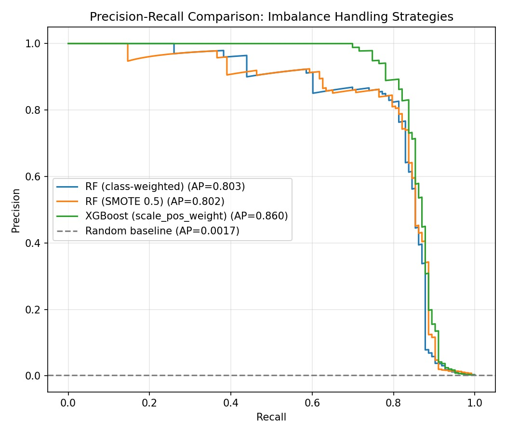
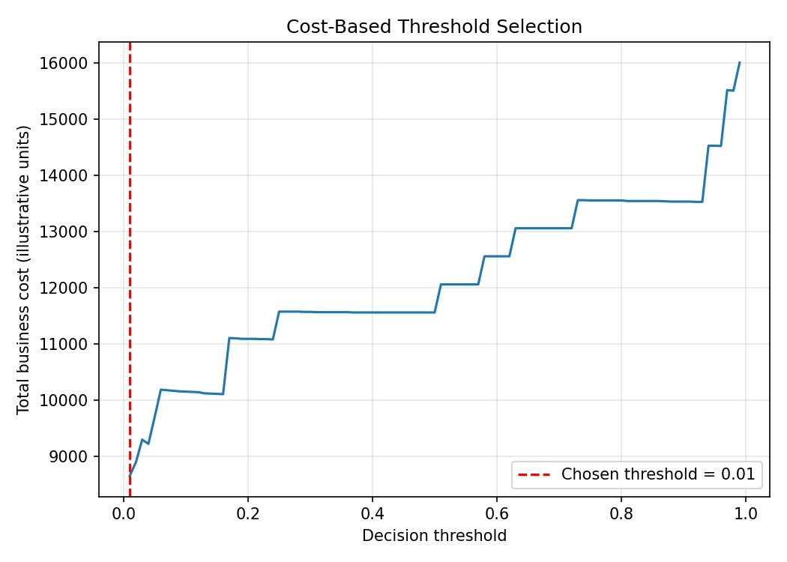

An end-to-end pipeline built around the defining challenge of fraud detection: the outcome you care about most is the one standard accuracy metrics ignore. Model comparison, cost-based threshold tuning, and an AI explainability layer, all grounded in real, verifiable numbers.
In this dataset (the Kaggle/ULB Credit Card Fraud benchmark), fraud accounts for just 0.17% of all transactions. A model that predicts "not fraud" every single time scores 99.8% accuracy and catches zero fraud. That single fact shapes every decision in this project: which models to compare, how to evaluate them, and where to set the line between a flag and a pass.
Rather than picking one technique and hoping it works, all three standard approaches were trained on the same engineered features (transaction velocity, rolling amount z-score, hour-of-day risk windows) and evaluated on the same held-out test set, then ranked by Average Precision, since accuracy would be meaningless here.
Penalises misclassifying the minority class more heavily during training, no resampling needed.
Synthetically oversamples fraud cases in the training set to ease the imbalance before fitting.
Gradient boosting with a built-in imbalance correction term, no resampling or class weighting needed.
XGBoost won on Average Precision, but the more interview-relevant result is what happened next: tuning the decision threshold against an explicit business cost (a missed fraud costs far more than a false alarm) rather than leaving it at the default 0.5 cutoff.

| Threshold | Precision | Recall | F1 |
|---|---|---|---|
| Default (0.5) | 0.893 | 0.813 | 0.851 |
| Cost-tuned (0.01) | 0.452 | 0.870 | 0.594 |

At the cost-tuned threshold, recall rises from 81% to 87% of all fraud caught, at the price of precision falling from 89% to 45%. That trade is not a flaw in the model, it is a deliberate business decision: given this illustrative cost ratio, the system should accept more false alarms in exchange for catching nearly nine in ten fraud cases. A different cost ratio would call for a different threshold.
The model outputs a probability. An analyst needs a reason. This layer calls the Claude API to convert a flagged transaction's feature values into a short, grounded explanation, turning the model from "a score" into a tool someone would actually use.
The repository includes the feature engineering pipeline, all three trained models, the cost-tuning logic, the explainability script, and an interactive Streamlit dashboard.